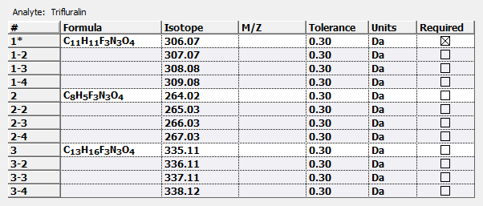
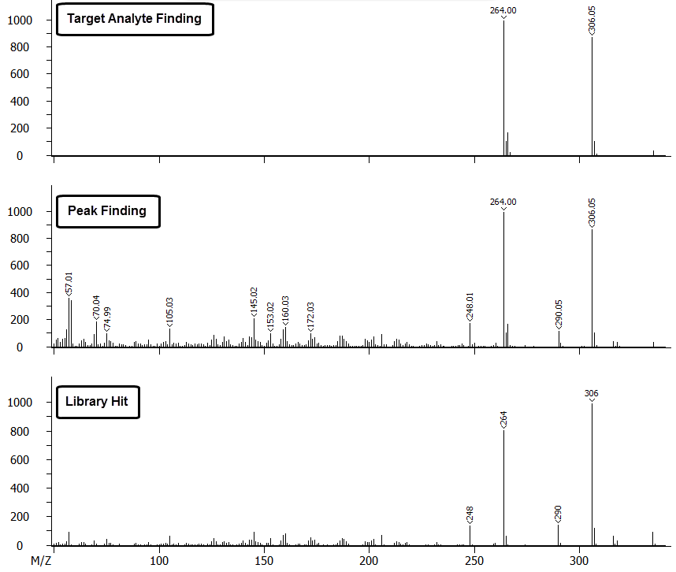

Target Analtye Finding (TAF) and Peak Finding (PF) are the two data processing modes within ChromaTOF. TAF is a data processing tool utilized for routine analysis when the analytes in a given sample and their approximate retention times are known. PF is primarily used for discovery work. TAF is a data processing technique which enables users to search for a predefined set of specific analytes in a sample. The following lists a comparison of the two data processing techniques.
Different quantities of spectral data is generated for TAF as compared to a PF data processing method. The mass spectra below provides a direct comparison for Trifluralin (CAS# 1582-09-8) using both data processing techniques. The table directly below lists the user defined TAF input masses for Trifluralin used to generate the TAF mass spectrum.
The PF mass spectrum contains all the deconvoluted masses detected that are assigned to Trifluralin. The TAF mass spectrum is comprised of only the user defined ions listed in the table that was found in the sample.
